Profill B 100
Profil balkonowy B100 jest profilem wykończeniowym z okapnikiem szerokości 20 mm. Profil montowany jest na odpowiednio przygotowana wylewkę spadkową. Wysokość pionowej krawędzi czołowej wynosi 3,5 mm, co pozwala na wykorzystanie profilu do układania nawierzchni z płytek ceramicznych z izolacją z zapraw uszczelniających a także do posadzek żywicznych wylewanych o grubości 2-3.5 mm. Profil doskonale pozwala odprowadzać wodę z balkonów i tarasów.
Profil okapowy B100 prosty 2,5m
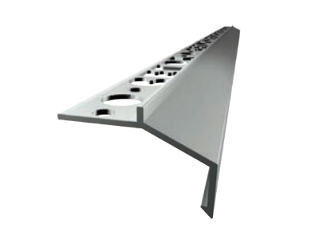
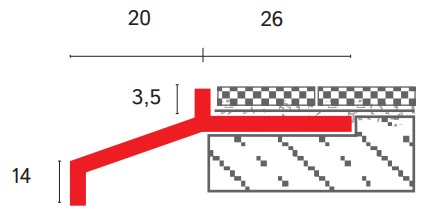
Profil balkonowy B100 jest profilem wykończeniowym z okapnikiem szerokości 20 mm . Profil montowany jest na odpowiednio przygotowana wylewkę spadkową . Wysokość pionowej krawędzi czołowej wynosi 3,5 mm, co pozwala na wykorzystanie profilu do układania nawierzchni z płytek ceramicznych z izolacją z zapraw uszczelniających a także do posadzek żywicznych wylewanych o grubości 2-3.5 mm. Profil doskonale pozwala odprowadzać wodę z balkonów i tarasów.
Narożnik wewnętrzny – Nw B100
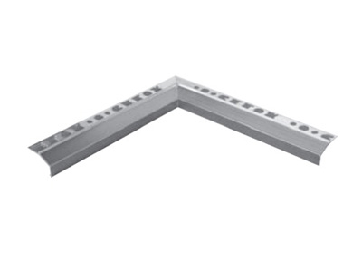
Wymiary 25 × 25 cm.
Kolor: naturalne aluminium, srebrny anodyzowany, brąz RAL 8028, szary RAL 7035, grafit RAL 7016.
Tworzywo: aluminium
Narożnik zewnętrzny – Nz B100
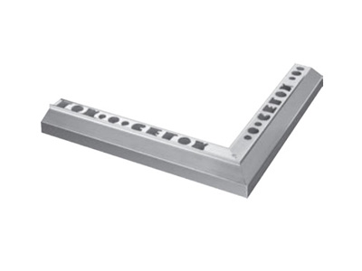
Kolor: naturalne aluminium, srebrny anodyzowany, brąz RAL 8028, szary RAL 7035, grafit RAL 7016
Tworzywo: aluminium
PROFIL OKAPOWY DRIP
Profil okapowy DRIP to drenażowy profil wykończeniowy z okapnikiem szerokości 40 mm. Profil montowany jest na odpowiednio przygotowana wylewkę spadkową i dedykowany jest do wykończania tarasów i balkonów z posadzką z płytek ceramicznych lub tzw Kamiennych Dywanów. Wysokość pionowej krawędzi czołowej wynosi 9 mm. Dedykowany do tarasów i balkonów z hydroizolacją mineralną , poliuretanową lub z matą uszczelniającą. Dolna część profilu posiada otwory drenażowe, które zapewniają doskonałe odprowadzanie pary wodnej lub wilgoci, która może gromadzić się na krawędzi z powodu m.in. nieszczelnych fug. Otwory drenażowe umożliwiają również skuteczną wentylację i osuszanie przestrzeni podposadzkowej. Profil posiada zabezpieczenie w postaci folii ochronnej, która ułatwia proste i szybkie czyszczenie po montażu. Dodatkowo profil DRIP jest elementem certyfikowanego systemu.
Profil okapowy DRIP prosty 2,5m
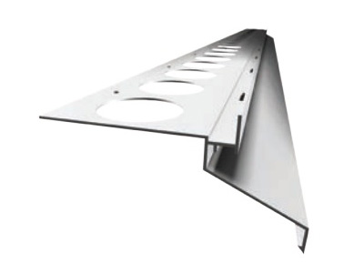
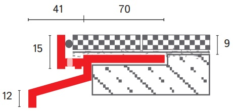
Profil okapowy DRIP to drenażowy profil wykończeniowy z okapnikiem szerokości 40 mm. Profil montowany jest na odpowiednio przygotowana wylewkę spadkową i dedykowany jest do wykończania tarasów i balkonów z posadzką z płytek ceramicznych lub tzw Kamiennych Dywanów. Wysokość pionowej krawędzi czołowej wynosi 9 mm. Dedykowany do tarasów i balkonów z hydroizolacją mineralną , poliuretanową lub z matą uszczelniającą. Dolna część profilu posiada otwory drenażowe, które zapewniają doskonałe odprowadzanie pary wodnej lub wilgoci, która może gromadzić się na krawędzi z powodu m.in. nieszczelnych fug. Otwory drenażowe umożliwiają również skuteczną wentylację i osuszanie przestrzeni podposadzkowej. Profil posiada zabezpieczenie w postaci folii ochronnej, która ułatwia proste i szybkie czyszczenie po montażu. Dodatkowo profil DRIP jest elementem certyfikowanego systemu. Wymiary: 250 cm. Tworzywo: aluminium
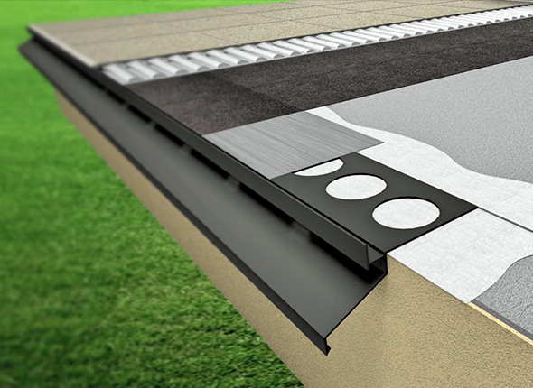
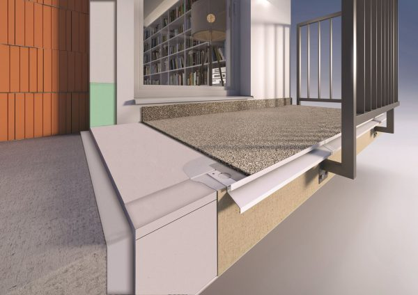
Narożnik wewnętrzny – Nw DRIP
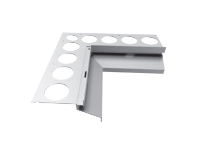
Wymiary: 25 × 25 cm
Kolor: srebrny anodyzowany, brąz RAL 8028, szary RAL 7035, grafit RAL 7016
Tworzywo: aluminium
Narożnik zewnętrzny – Nz DRIP
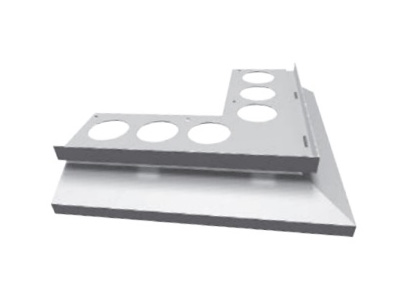
Wymiary: 25 × 25 cm
Kolor: srebrny anodyzowany, brąz RAL 8028, szary RAL 7035, grafit RAL 7016
Tworzywo: aluminium
Łącznik profili DRIP
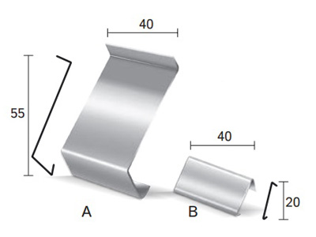
Wymiary: 4 × 5.8 cm
Kolor: srebrny anodyzowany, brąz RAL 8028, szary RAL 7035, grafit RAL 7016
Tworzywo: aluminium
Odbojniki przyścienne DRIP (komplet L+P)
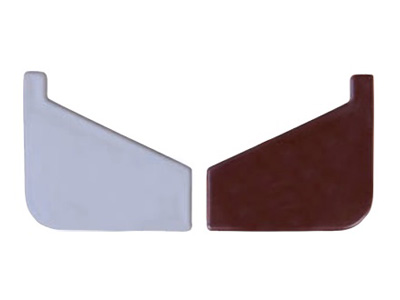
Kolor: brąz RAL 8028, szary RAL 7035, grafit RAL 7016. Tworzywo: PP
PROFIL OKAPOWY DRIP PLUS
Profil okapowy DripPlus to profil drenażowy o szerokości okapnika 40 mm przeznaczony do tarasów i balkonów z nawierzchnią z płytek ceramicznych lub płyt betonowych. Wysokość pionowej krawędzi czołowej wynosi 20 mm. Profil umożliwia realizację m.in. tarasów z posadzką z płytek ceramicznych ułożonych na hydroizolacji i macie kompensującej lub drenażowej. Drenażowa konstrukcja profilu umożliwia usuwanie wilgoci z posadzki jak i również wentylację. Dolna część profilu posiada otwory drenażowe, które zapewniają doskonałe odprowadzanie pary wodnej lub wilgoci, która może gromadzić się na krawędzi z powodu m.in. nieszczelnych fug lub odprowadzenia wody gromadzącej się w wyniku zastosowania posadzki bezfugowej i wentylowanej. Dodatkowo profil DripPlus jest elementem certyfikowanego systemu.
Profil okapowy DRIP PLUS prosty 2,5m
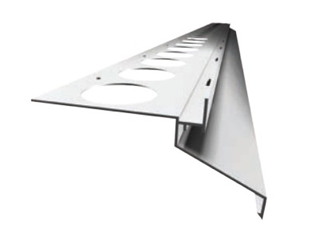
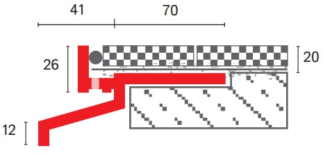
/Profil okapowy DripPlus to profil drenażowy o szerokości okapnika 40 mm przeznaczony do tarasów i balkonów z nawierzchnią z płytek ceramicznych lub płyt betonowych. Wysokość pionowej krawędzi czołowej wynosi 20 mm. Profil umożliwia realizację m.in. tarasów z posadzką z płytek ceramicznych ułożonych na hydroizolacji i macie kompensującej lub drenażowej. Drenażowa konstrukcja profilu umożliwia usuwanie wilgoci z posadzki jak i również wentylację. Dolna część profilu posiada otwory drenażowe, które zapewniają doskonałe odprowadzanie pary wodnej lub wilgoci, która może gromadzić się na krawędzi z powodu m.in. nieszczelnych fug lub odprowadzenia wody gromadzącej się w wyniku zastosowania posadzki bezfugowej i wentylowanej. Dodatkowo profil DripPlus jest elementem certyfikowanego systemu. Wymiary: 250 cm. Tworzywo: aluminium
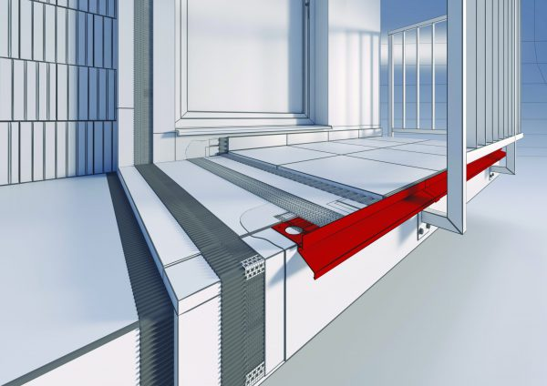
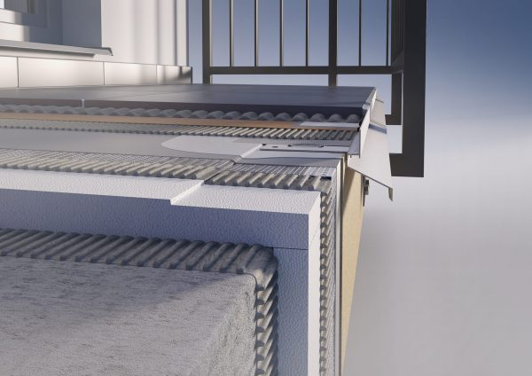
PROFIL OKAPOWY STONE
Profil okapowy Stone to drenażowy profil wykończeniowy do tarasów i balkonów z możliwością osłony czoła balkonu. Konstrukcja profilu umożliwia wysunięcie profilu w zakresie od 20 do 40 mm pomiędzy czoło balkonu a krawędź okapu. Wysokość pionowej krawędzi czołowej wynosi 11 mm. Profil został zaprojektowany tak, aby zapewnić funkcjonalne i estetyczne wykończenie balkonów i tarasów z warstwą wierzchnią z kamiennych dywanów lub z płytek ceramicznych. W dolnej części profilu znajdują się otwory drenażowe, które zapewniają doskonałe odprowadzenie wilgoci z krawędzi okapu (w przypadku balkonów lub tarasów z warstwa wierzchnią z płytek ceramicznych) lub wody opadowej odprowadzanej przez kamienny dywan. Do profilu można zamocować blachę osłonową, która doskonale ochroni czoło balkonu lub zakryje, zamaskuje naprawione czoło po renowacji. Blachę ochronną wsuwamy do „zamka” profilu balkonowego STONE i przy użyciu wkrętów mocujemy ją do czoła balkonu.
Profil okapowy STONE prosty 2,5m
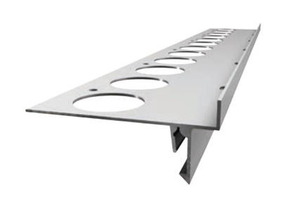
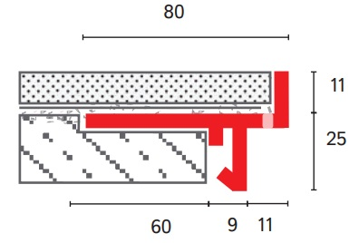
Profil okapowy DripPlus to profil drenażowy o szerokości okapnika 40 mm przeznaczony do tarasów i balkonów z nawierzchnią z płytek ceramicznych lub płyt betonowych. Wysokość pionowej krawędzi czołowej wynosi 20 mm. Profil umożliwia realizację m.in. tarasów z posadzką z płytek ceramicznych ułożonych na hydroizolacji i macie kompensującej lub drenażowej. Drenażowa konstrukcja profilu umożliwia usuwanie wilgoci z posadzki jak i również wentylację. Dolna część profilu posiada otwory drenażowe, które zapewniają doskonałe odprowadzanie pary wodnej lub wilgoci, która może gromadzić się na krawędzi z powodu m.in. nieszczelnych fug lub odprowadzenia wody gromadzącej się w wyniku zastosowania posadzki bezfugowej i wentylowanej. Dodatkowo profil DripPlus jest elementem certyfikowanego systemu. Wymiary: 250 cm.Tworzywo: aluminium
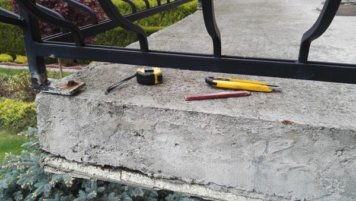
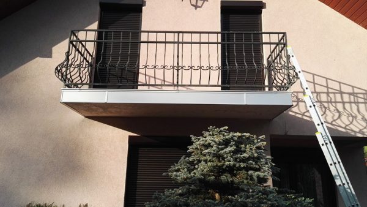
Narożnik wewnętrzny – Nw DRIP
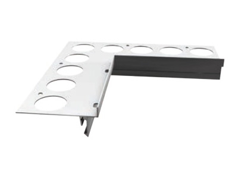
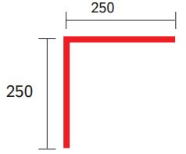
Wymiary: 25 × 25 cm
Kolor: srebrny anodyzowany
Tworzywo: aluminium
Narożnik zewnętrzny – Nz STONE
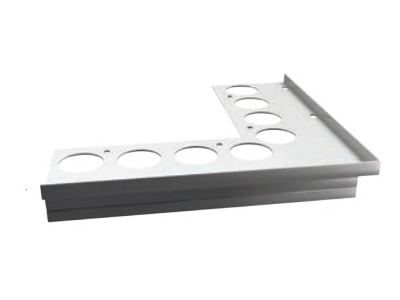
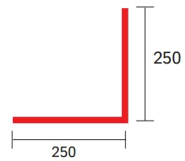
Wymiary: 25 × 25 cm
Kolor: srebrny anodyzowany
Tworzywo: aluminium
Łącznik profili STONE
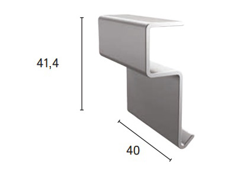
Wymiary: 4 × 4.14 cm
Kolor: srebrny anodyzowany
Tworzywo: aluminium
Aluminiowa osłona czoła balkonu STONE (2 mb)
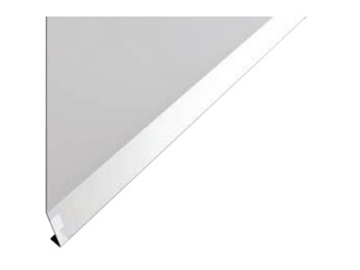
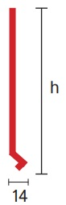
Wymiary: 200 × 10 × 1.4 cm
Kolor: srebrny anodyzowany
Tworzywo: aluminium
Wysokość osłony: h=10cm, h=15cm, h=20cm
PROFIL OKAPOWY MAXI
Profil okapowy Maxi prosty 2,5m
Profil okapowy Maxi prosty 2,5m
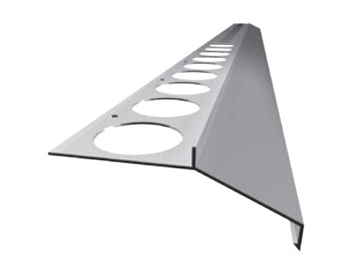
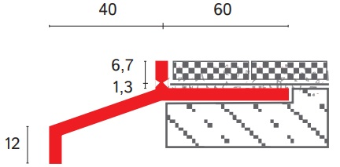
Profil okapowy MAXI to profil wykończeniowy z okapnikiem szerokości 40 mm, Profil montowany jest na przygotowana wylewkę spadkową i dedykowany jest do wykończania tarasów i balkonów z posadzką z płytek ceramicznych. Profil pozwala na przykrycie nierówności czoła balkonu do 20 mm. Wysokość pionowej krawędzi czołowej wynosi standardowo 8 mm i ale można ją zmniejszyć poprzez wyłamanie specjalnie do tego przygotowanego elementu czołowego. Uzyskamy wtedy wysokości 1,5 mm – idealną do wykończenia tarasu lub balkonu w przypadku zastosowania posadzek żywicznych cienkowarstwowych. Profil nadaje się również do realizacji tarasów i balkonów z jedno lub dwuskładnikową hydroizolacją lub matą uszczelniającą . Profil posiada zabezpieczenie w postaci folii ochronnej, która ułatwia proste i szybkie czyszczenie po montażu. Dodatkowo profil Maxi jest elementem certyfikowanego systemu. Wymiary: 250 cm. Tworzywo: aluminium
Narożnik wewnętrzny – Nw MAXI
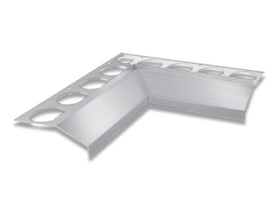
Wymiary: 25 × 25 cm
Kolor: naturalne aluminium, srebrny anodyzowany, brąz RAL 8028, szary RAL 7035, grafit RAL 7016
Tworzywo: aluminium
Narożnik zewnętrzny – Nz MAXI
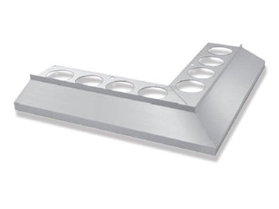
Wymiary: 25 × 25 cm
Kolor: naturalne aluminium, srebrny anodyzowany, brąz RAL 8028, szary RAL 7035, grafit RAL 7016
Tworzywo: aluminium
Łącznik profili MAXI
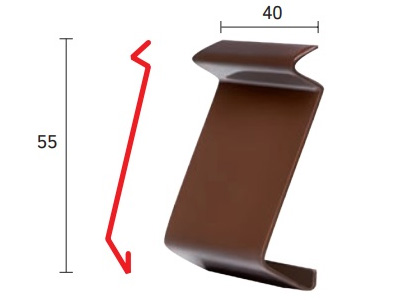
Wymiary: 4 × 5.5 cm
Kolor: naturalne aluminium, srebrny anodyzowany, brąz RAL 8028, szary RAL 7035, grafit RAL 7016
Tworzywo: aluminium
PROFIL OKAPOWY PRIAMY
Profil okapowy Priamy prosty 2,5m
Profil okapowy Priamy prosty 2,5m
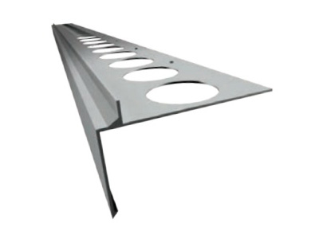

Profil balkonowy PROSTY (PRIAMY) – to profil wykończeniowy umożliwiający wysunięcie profilu w zakresie od 10 do 30 mm pomiędzy czoło balkonu a krawędź okapu. Profil pozwala również na przykrycie nierówności czoła balkonu do 20 mm. Wysokość pionowej, górnej krawędzi czołowej wynosi 10 mm. Profil PRIAMY Jest stosowany głównie w przypadkach, gdy nie można użyć innego profilu z powodu niewystarczającej przestrzeni między krawędzią balkonu a wspornikami balustrady. Za pomocą tak wykończonych krawędzi okapu otrzymujemy szczelne i estetyczne wykończenie tarasu lub balkonu. Nadaje się do wykonywania tarasów lub balkonów z hydroizolacją mineralną, poliuretanową lub matą uszczelniającą. Profil PRIAMY można łączyć systemowo z profilem balkonowym FLEXI. Wymiary: 250 cm. Tworzywo: aluminium
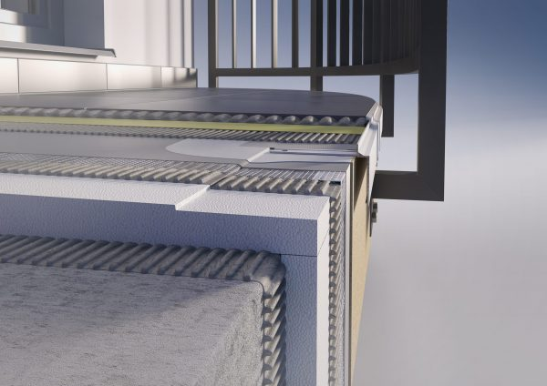
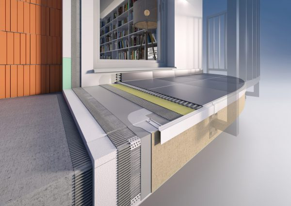
Narożnik wewnętrzny – Nw PRIAMY
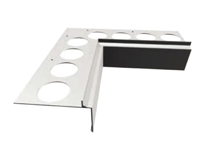
Wymiary: 25 × 25 cm
Kolor: naturalne aluminium, srebrny anodyzowany, brąz RAL 8028, szary RAL 7035, grafit RAL 7016
Tworzywo: aluminium
Narożnik zewnętrzny – Nz PRIAMY
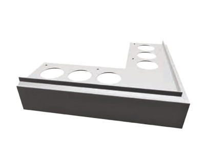
Wymiary: 25 × 25 cm
Kolor: naturalne aluminium, srebrny anodyzowany, brąz RAL 8028, szary RAL 7035, grafit RAL 7016
Tworzywo: aluminium
Łącznik profili PRIAMY / FLEXI
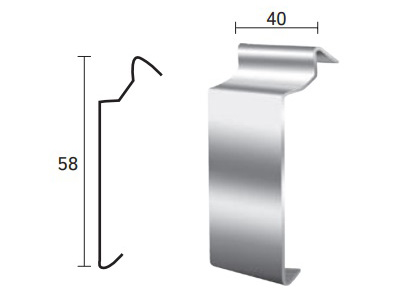
Wymiary: 4 × 5.8 cm
Kolor: naturalne aluminium, srebrny anodyzowany, brąz RAL 8028, szary RAL 7035, grafit RAL 7016
Tworzywo: aluminium
PROFIL OKAPOWY PRIAMY FLEXI
Profil okapowy PRIAMY FLEXI 2,5m
Profil okapowy PRIAMY FLEXI 2,5m
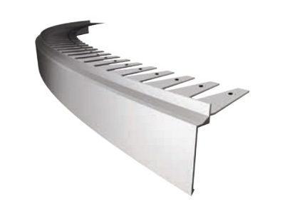
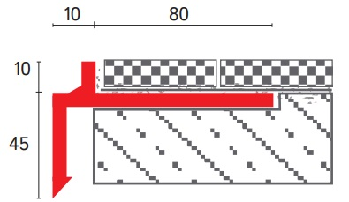
Jest to wyjątkowy profil na rynku profili okapowych, przeznaczony do wykończenia tarasów i balkonów w kształcie łuku. Wysokość pionowej krawędzi czołowej wynosi 10mm. Profil dedykowany do realizacji tarasów i balkonów z hydroizolacją, ewentualnie z matą uszczelniającą. Profil można wygiąć do wymaganego promienia krzywizny za pomocą specjalnego urządzenia (giętarka). Przez wykończenie krawędzi tarasu profilem Flexi uzyskujemy estetyczne i perfekcyjne wykończenie nawierzchni z płytek dociętych w kształcie łuku. Profil można łączyć z profilem balkonowym PRIAMY. Wymiary: 250 cm. Tworzywo: aluminium